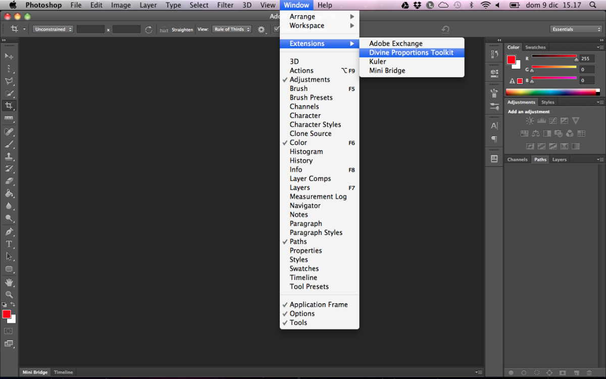
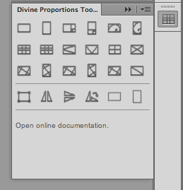
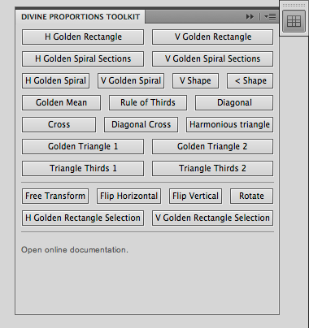
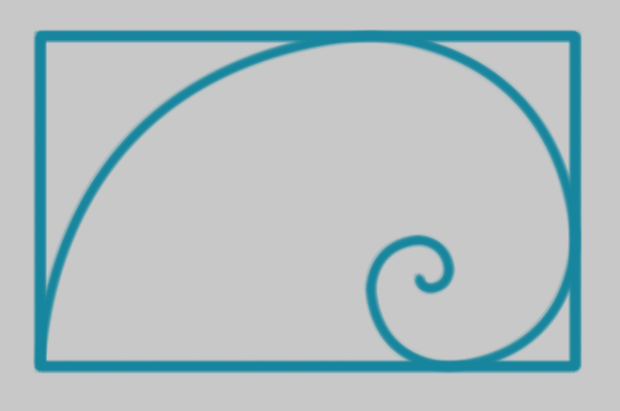

Divine Proportions Toolkit
When composing a photograph or creating a design, we reach a point when we feel that everything is right. Most of the times our creations are based on our feelings rather than logical thought.
Experienced photographers and designers know what is called the golden rules of composition and use them almost innately, but for most people, words like Golden Spiral, Rule of Thirds or Harmonious Triangle may seem confusing at first.
Enter Divine Proportions Toolkit
This toolkit eases the process of composing your work (be it a photograph or a design) with a list of features and functions that create shapes mocking the divine proportions. Using the kit is really simple: just select a layer, make a marquee selection and choose the path type you need. You can then scale, rotate or edit the path.
Important: please note that the tool will work erratically on Ps CC as there’s some scripting incompatibility. Fortunately Photoshop CC introduces divine proportions in its Crop tool.
Binary Download
If you need the ready-to-use files (for both Photoshop CS5 and CS6), please follow this link.
Opening the Panel
To open the panel from Photoshop, choose Window > Extensions > Divine Proportions Toolkit as shown in the picture below.
The Panel Interface
The toolkit panel shows a set of buttons; most of them will create a rasterized path on a new layer in your document, while some others will let you transform the path.
The picture below shows the CS5 version of the panel; as you can notice it has a slightly different interface (text instead of icons), but it retains the same features as the CS6 version.
The Path Buttons
Clicking on the following buttons, will make Photoshop draw the corresponding path. If you selected an area with the Marquee Tool, the shape will be drawn using the selection boundaries, otherwise the full document will be used as a selection.
Golden Rectangle (Horizontal and Vertical)
A Golden Rectangle (horizontal or vertical) will be drawn. The selection will be changed to suit the best ratio for the rectangle.
Golden Spiral Section (Horizontal and Vertical)
The sections of a Golden Spiral (Horizontal and Vertical) will be drawn. The selection will be changed to suit the best ratio for the rectangle.
Golden Spiral (Horizontal and Vertical)
A Golden Spiral (Horizontal and Vertical) will be drawn. The selection will be changed to suit the best ratio for the rectangle.
Golden Mean
A 3×3 grid will be drawn using the Golden Mean proportions.
Rule of Thirds
A 3×3 grid will be drawn using the Rule of Thirds proportions.
< Shape
A < shape will be drawn.
V Shape
A V shape will be drawn.
Cross
A cross will be drawn.
Diagonal Cross
A diagonal cross will be drawn.
Golden Triangle (1 and 2)
Two Golden Triangles will be drawn inside the selection. If you are using a divine proportion selection, the resulting path will be the same as the Harmonious Triangle.
Triangle Thirds (1 and 2)
This is the same as the Golden Triangle, but it will use the rule of thirds for the segments.
Harmonious Triangle
Two Harmonious Triangles will be drawn inside the selection. If you are using a divine proportion selection, the resulting path will be the same as the Golden Triangle.
Diagonal
A diagonal will be drawn inside the selection.
The Transform Buttons
These additional buttons are utility features for selecting and transforming your paths.
Free Transform
A shortcut for the regular Photoshop Free Transform menu command.
Flip Horizontal
A shortcut for the regular Photoshop Flip Horizontal menu command.
Flip Vertical
A shortcut for the regular Photoshop Flip Vertical menu command.
Rotate
A shortcut for the regular Photoshop Rotate menu command.
Golden Rectangle Selection (Horizontal and Vertical)

A Golden Rectangle (horizontal or vertical) will be selected. If you have already a selection, it will be changed to suit the best ratio for the rectangle.
The Drawn Path
Please keep in mind that the path drawn will be using the brush tool with the user selected attributes, as shown in picture 4.
